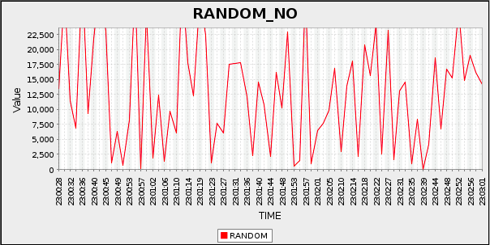
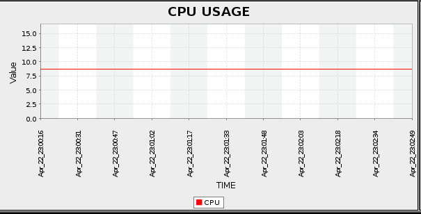

open separately? CHECK OUT HOW-I-MADE-THIS DOWNLOAD ZeeK Monitor - a tool to plot values real time on web interface!  This setup lets user to plot any comma separated values at real time.  The plotted chart is published on a webpage. This is a good tool to show realtime statistics. Their are various options to display chart, order charts, group charts etc. Technically the client needs to broadcast (on UDP) comma separated values to server being used to process chart and push to a webpage. The intermediate dataProcessor will capture the data. The chartProcessor will process and create images (every X interval for last Y data) and webpage/html will display the chart.